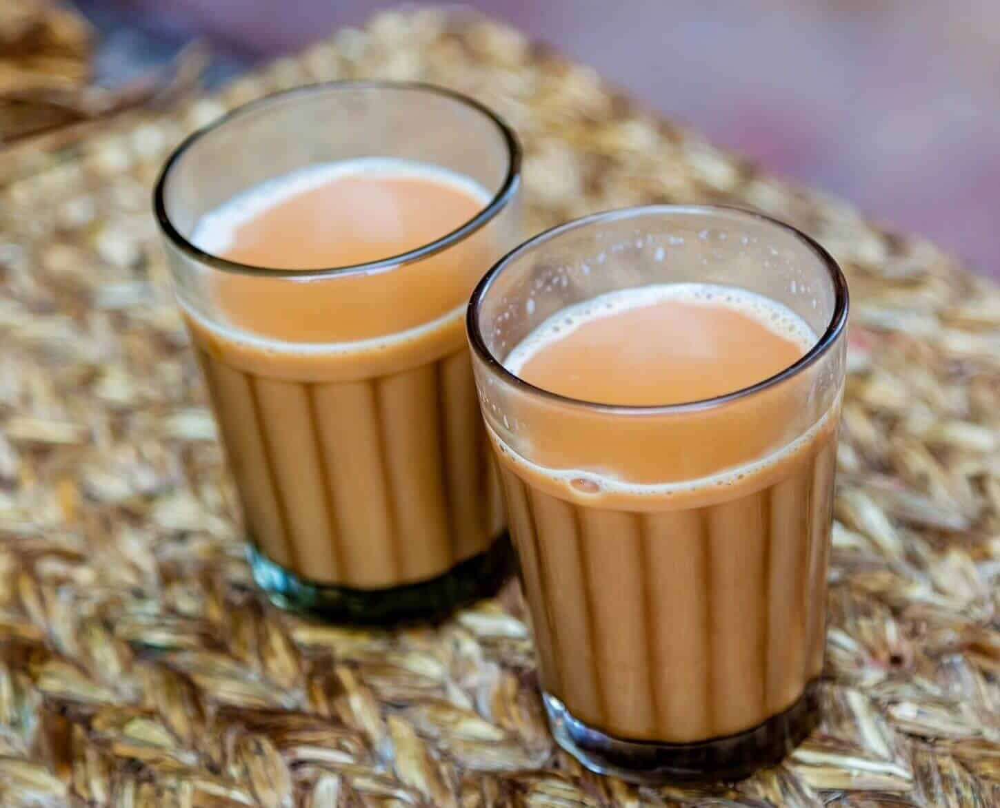

How to make a good tea??
To make a good team you will require these ingridients:
- Milk
- Water
- Tea leaves
- Sugar
- Tea Masala
What are these ingredients exactly?
- Tea Leaves
- This is the main ingrident. This gives he special color to the tea.
Good quality of tea leaves are mostly grown in hilly part such as
Ilam, Darjelling(India).
- Tea Masala
- Masala is a Local language used in south asian country. Masala means herbs and
spicies in the form of the powder. Tea Masala means powder of mixture of cinnamon,dy ginger,
and so on.
Once you have these ingridents, you have to follow these steps
- In a saucepan, add water and all the spices, including cardamom pods, cinnamon stick, cloves,
and ginger. Bring the water to a boil and
let it simmer for a few minutes until the spices release their aroma.
- Add black tea leaves and let it simmer for another 2-3 minutes.
- Add milk and sugar, and bring the mixture to a boil. Keep stirring the tea while it boils.
- Turn off the heat and strain the tea into cups or mugs.
Following, this you can enjoy your hot-masala tea.
